Day 1 I came to Floflis' GitHub organization and openned its “meta” repo, which contains issues referring to the whole OS; on it, organized its issues for the upcomming build 071 (moved issues to other milestones, and created new ones).
Organized issues page:
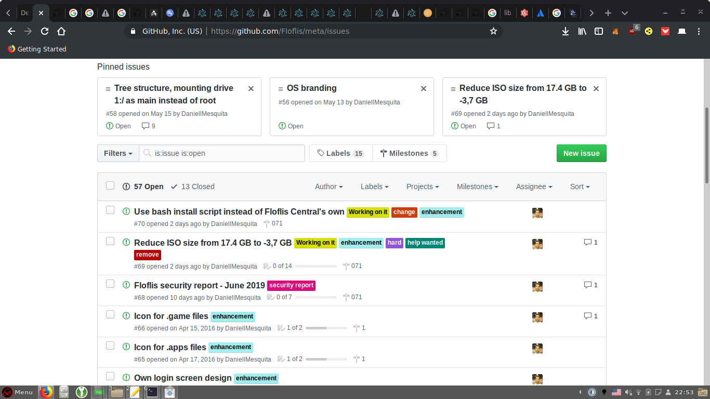
Organized build 071 milestone:
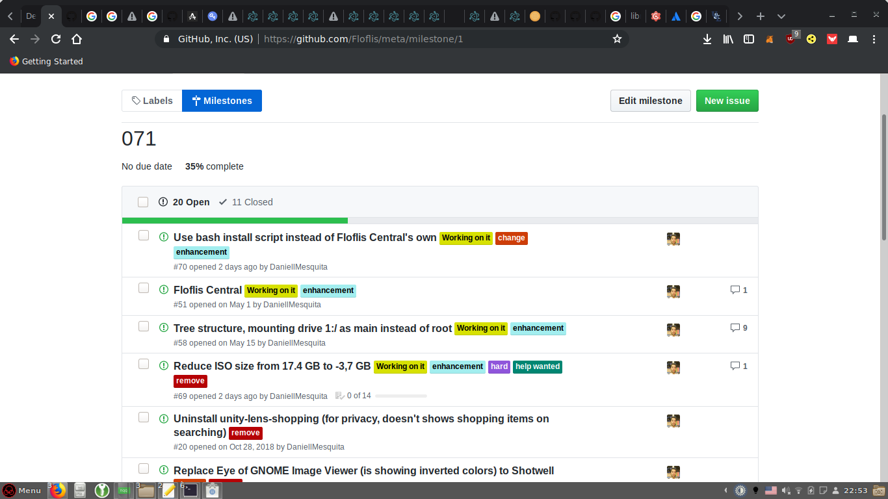
Also, did a audit with Lynis, for the security report of July:
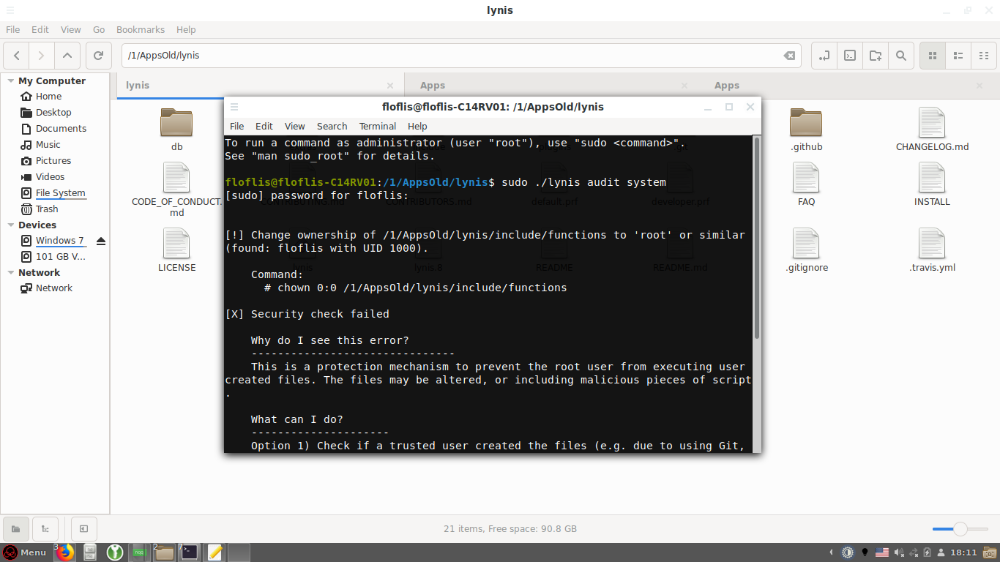
Tried to compile/install Stacer (didn’t worked), for cleanning junk storage usage:
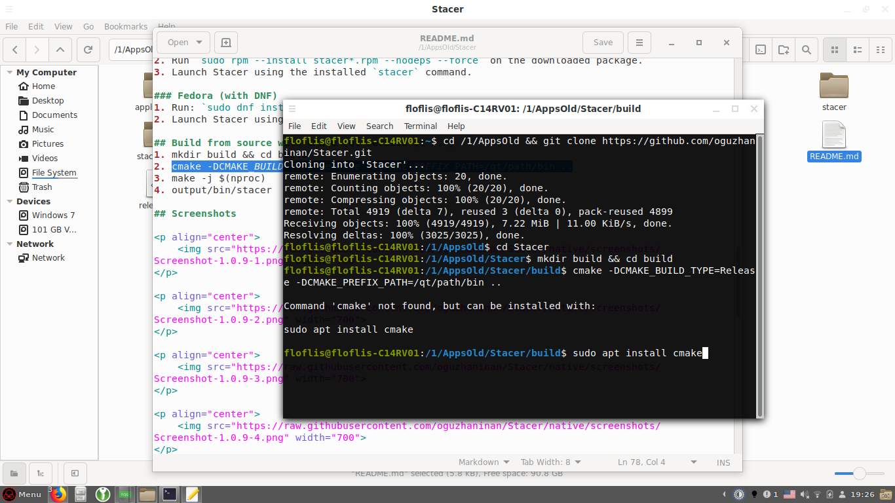
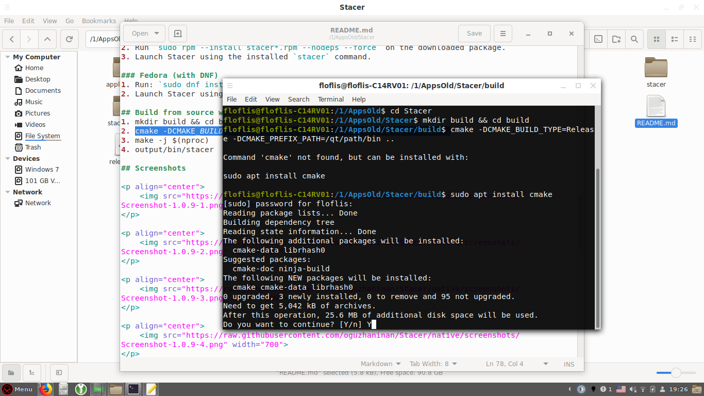
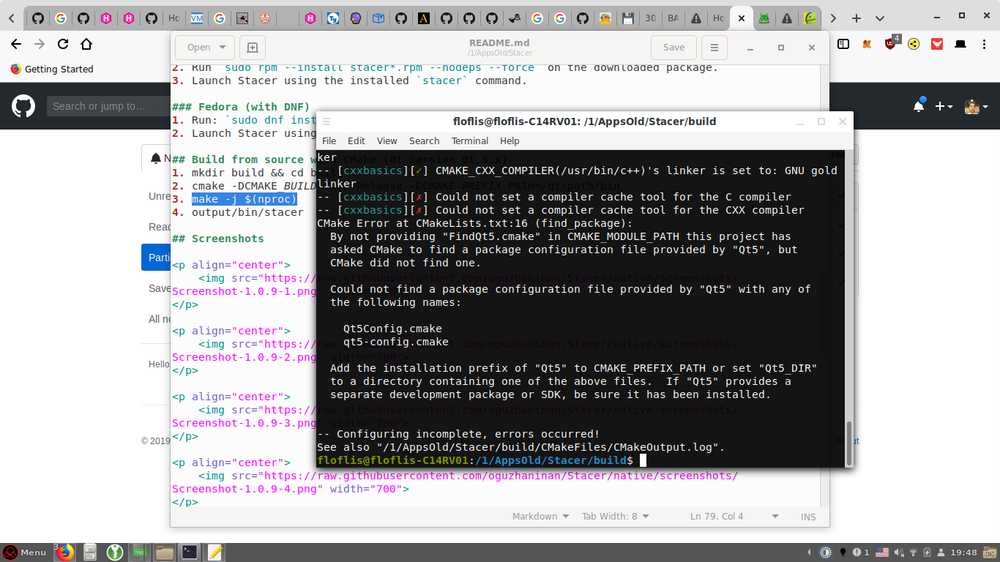
And started to create the bash script for Floflis Installer:
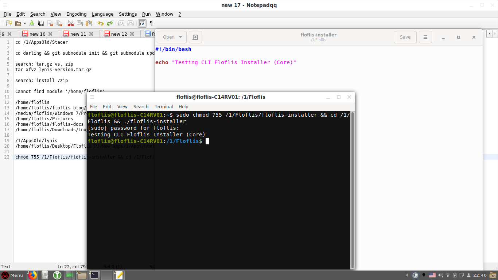
Yes, I don’t want to depend on Floflis Central to install Floflis, in favour of Floflis Core; making Floflis Central a simple GUI/UI for the Installer. And it is amazing: bash script is easier than JavaScript! ❤ I didn’t thought programming for CLI would be easier than programming for Web.
Start of a bash file, jumping a line and showing a welcome message:
#!/bin/bash
echo ""
echo "Welcome!"
Showing ASCII art - and any other textbox:
cat << "EOF"
_ _
|_ | _ _|_ | o _
| | (_) | | | _>
___ _ _ _
|_ _| _ _ ___ | |_ __ _ | | | | ___ _ _
| | | ' \ (_-< | _| / _` | | | | | / -_) | '_|
|___| |_||_| /__/ \__| \__,_| |_| |_| \___| |_|
EOF
Doing CLI commands (such as creating folder, applying chmod permissions), and explainning them:
echo "Creating /1 (tree) folder..."
mkdir /2
echo "Setting permissions on /1 folder..."
chown -R $(id -u):$(id -g) /2
echo "Testing write permissions on tree folder..."
echo "If it takes more than 30 seconds, please reboot your device and try again."
echo "🤓 If u're nerd: root will be needed for applying chmod to folder. So, instead of being owned by root, tree folder will be writable by you as normal user."
echo -n > /2/temp.txt
After Floflis Central identifies temp.txt exists, it creates temp2.txt. And when bash script identifies that:
if [ -e /2/temp2.txt ]
then
rm /2/temp.txt
rm /2/temp2.txt
echo "Creating settings folder..."
mkdir /2/config
echo "Creating sys folder..."
mkdir /2/Floflis
echo ""
tar xfvz
fi
Bash identifies Floflis Central had created temp2.txt, and goes to next step; that is the primitive way I thought to make the two proccesses collaborate and communicate with each other.
Day 2 I’ve worked more on the bash installer, and tunned a few things on Floflis itself:
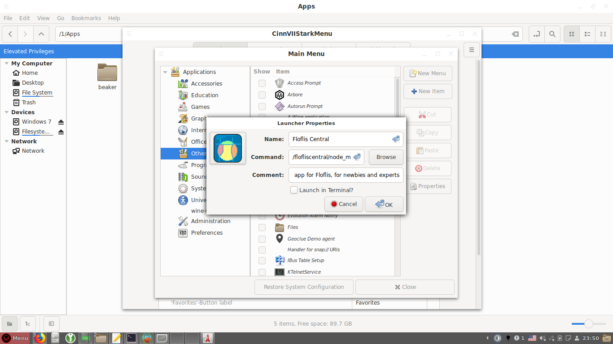
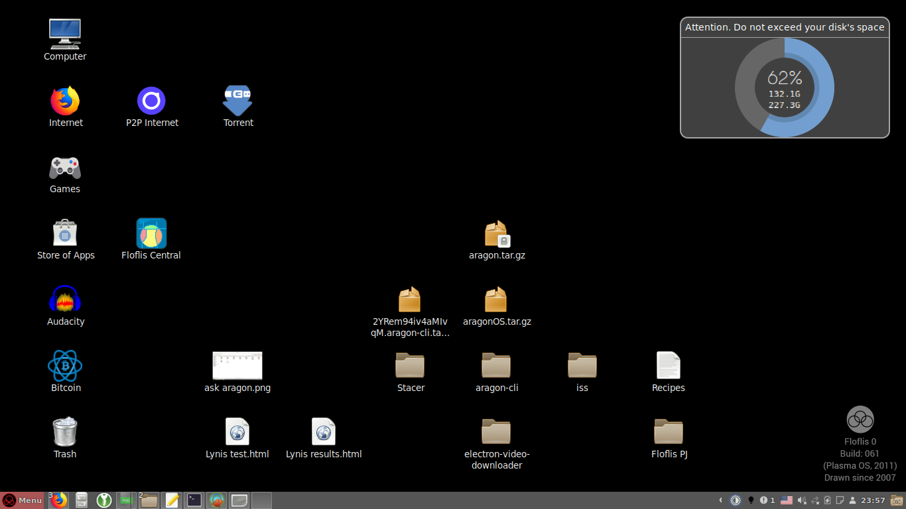
Did a security audit of Floflis Central’s NPM dependencies:
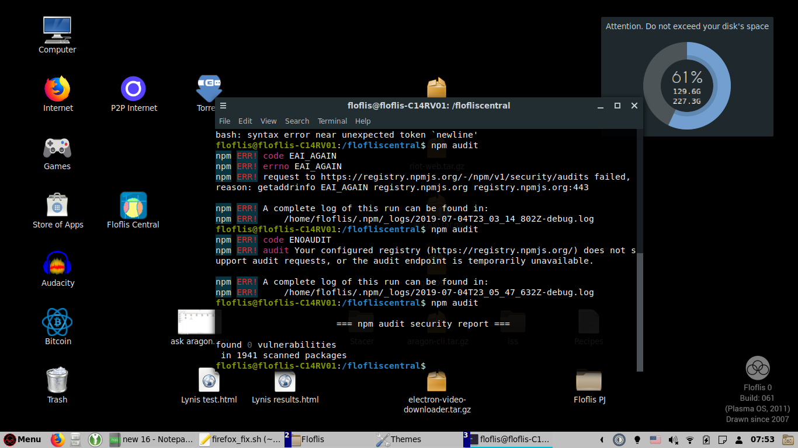
About to replace KeePassXC with KeeWeb (Electron version), but both KeePassXC and Minetest are amazingly smaller compared to a Electron app:
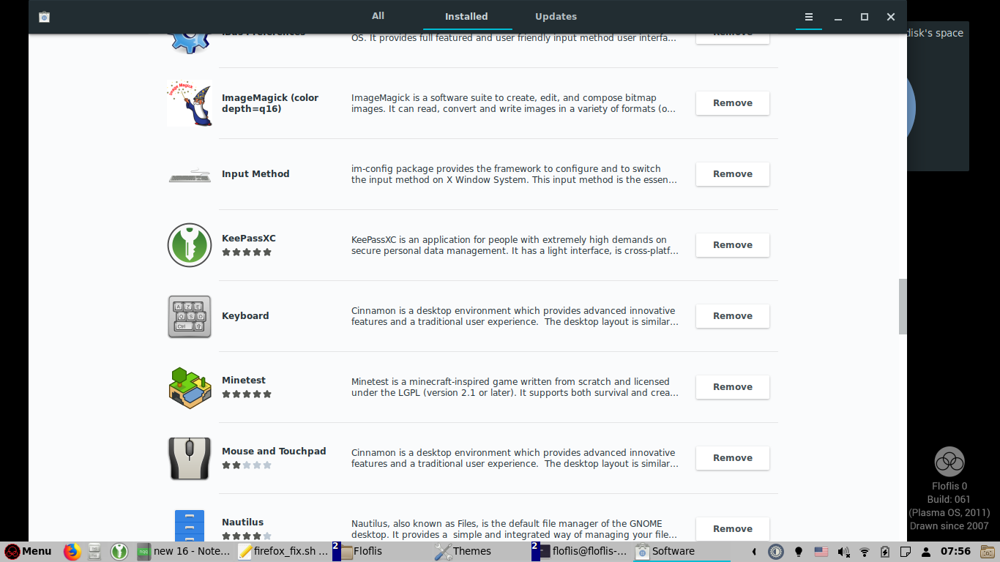
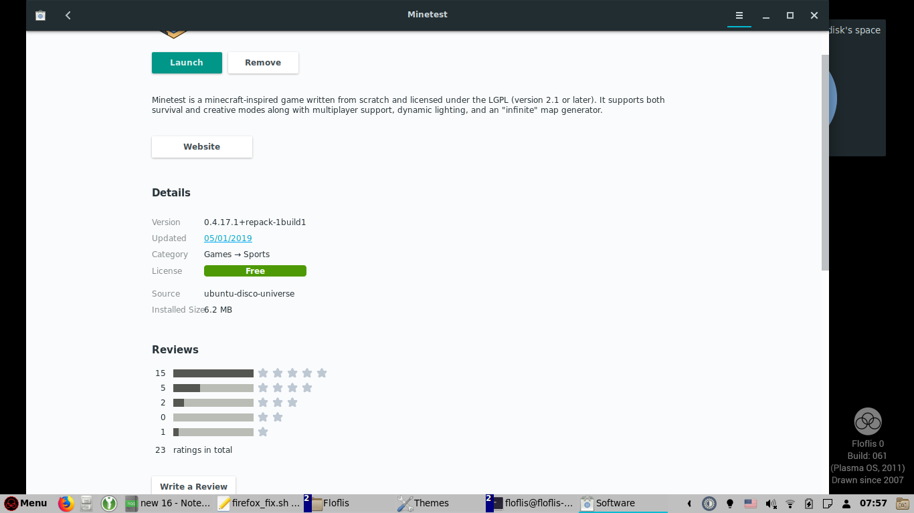
Yes, I need to make any Floflis' Electron apps to depend on global shared modules instead of duplicing their own.
Created a icon/shortcut for Floflis Central, on Explore menu (pinned and on lists) and desktop/launcher.
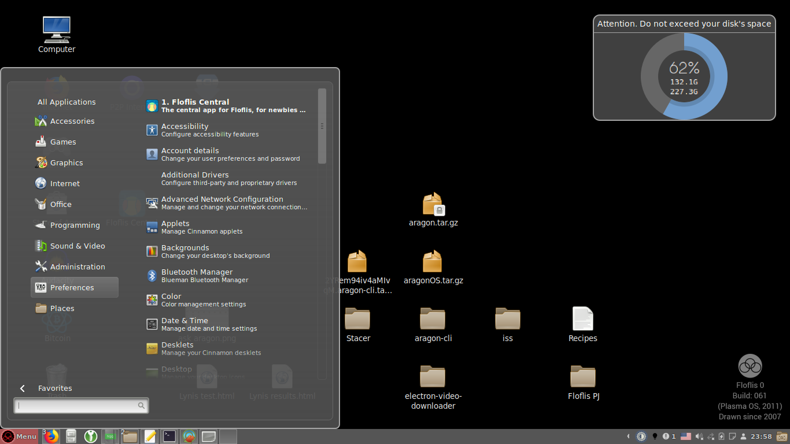
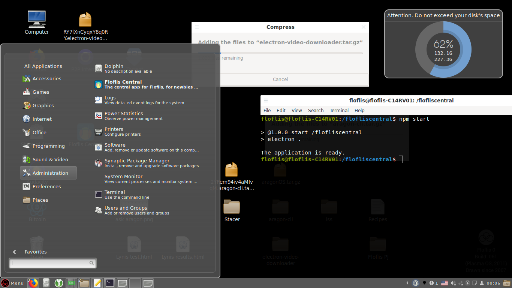
Replaced home to tree link in Explore menu.
Renamed System Settings to simply Settings, and replaced its link to Floflis Central.
But Floflis Central isn’t openning from these links:
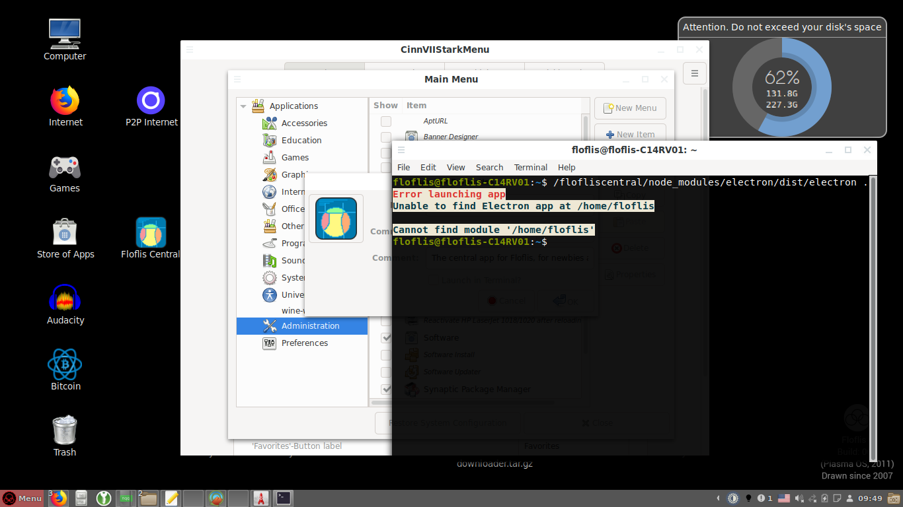
I’ll need to create a executable bash script for openning Floflis Central, as Cinnamon links only accepts executables and not commands.
Today, did a good re-draft of my paper notes (lines instead of drawing, and three sections: search, develop and a todo list for other projects) for Floflis development and some studies about Linux on routers. Also, cleanning junk files and programs.